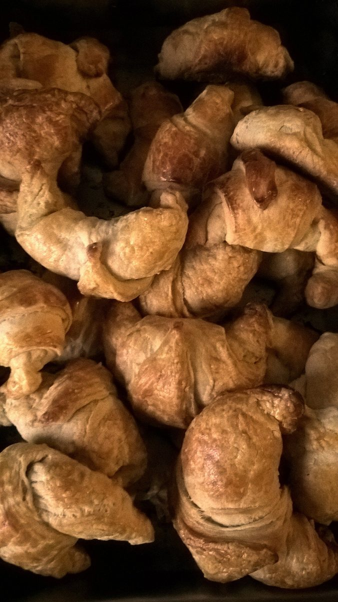
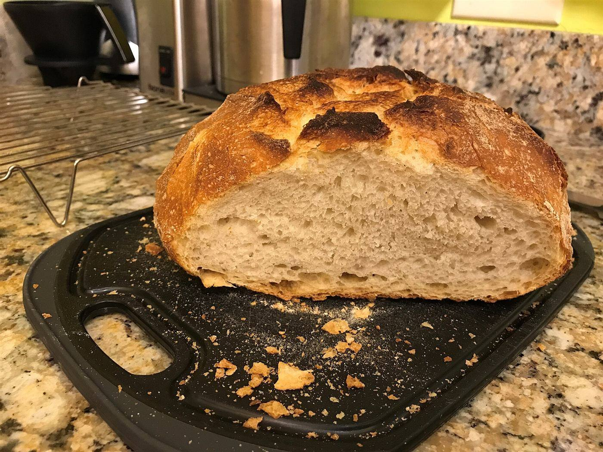
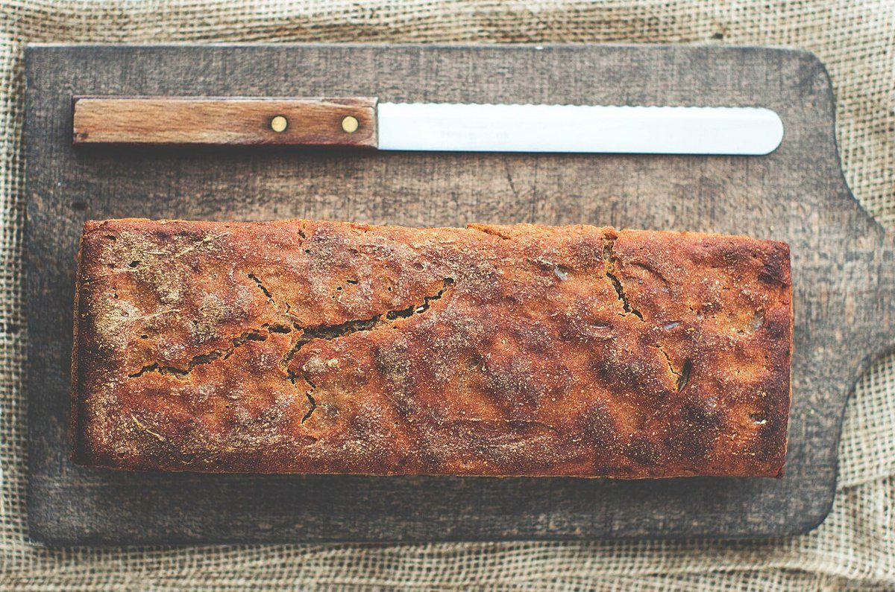
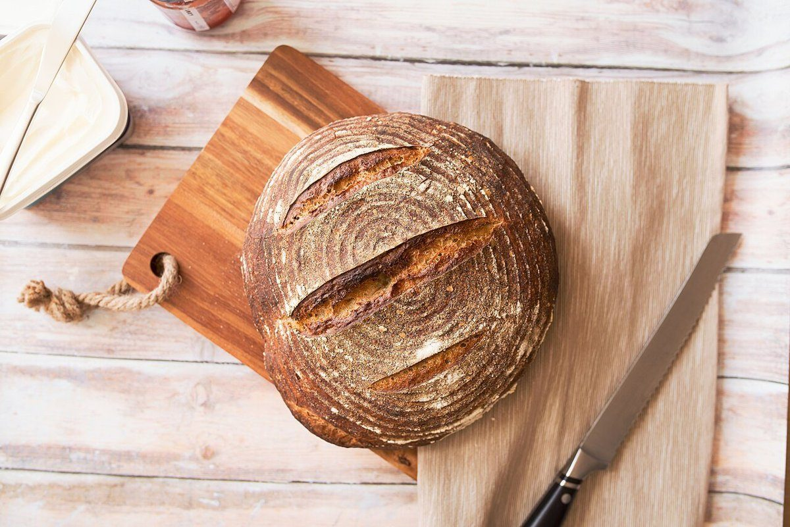

メニュー
メニュー・価格は準備中
商品の内容や価格は、お店からご提供いただいてから掲載します。ここでは、六つの部位の枠だけを先に置いています。
- 1土台板準備中
- 2縄巻きの支柱準備中
- 3ステップ準備中
- 4ハンモック準備中
- 5ハウス準備中
- 6見晴らし台準備中
写真(イメージ)








写真はパンのイメージです。お店のものではなく、お店で提供している商品を示すものではありません。
メニュー
商品の内容や価格は、お店からご提供いただいてから掲載します。ここでは、六つの部位の枠だけを先に置いています。




写真はパンのイメージです。お店のものではなく、お店で提供している商品を示すものではありません。